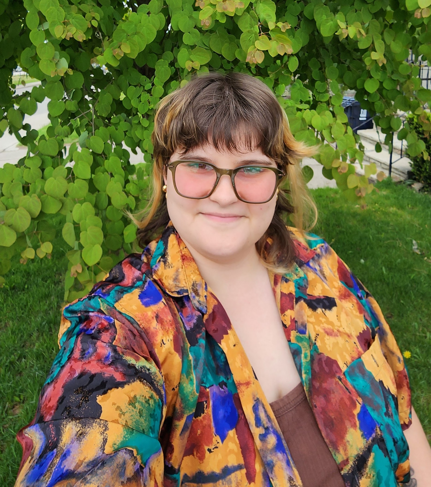
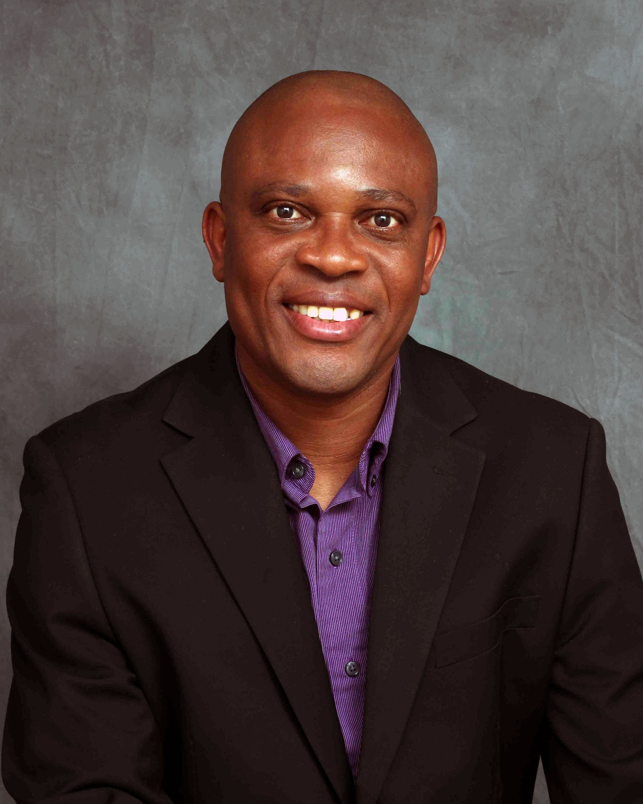

Name: Name: RJ (Rachel) Remesat
Position: Graduate Student
Specialization: Accessible Design
Thesis Name: NeuroNav: Mapping Accessible Navigation for Neurodivergent Students
Project Description: NeuroNav explores the navigation experiences of neurodivergent postsecondary students within York’s complex campus.
The project combines quantitative biometric data with qualitative interviews, capturing the expanse of emotional, physiological and sensory experiences
that impact students’ abilities to navigate safely and effectively. Using this data, I’m creating spatial sensory maps as a form of data visualization and knowledge production.
These maps reveal the ways in which campus navigation creates specific barriers unique to neurodivergent students. Looking ahead, I hope to bring together students, faculty, designers
and policy makers to discuss and co-create strategies and designs that foster accessible navigation design for all.
Bio: I am currently completing my studies in York University’s Digital Media MA program and will soon begin a PhD at York’s Science and Technology Studies department. My academic background
is in accessible spatial design, with a particular focus on creating environments that support the diverse experiences and needs of neurodivergent people. I have been a Connected Minds funded trainee
throughout my Master’s degree and have been part of SaTSLab for nearly two years. Most recently, I worked with Dr. Shital as a research assistant on Neighborly, a tactile board game designed to help people living
with dementia and their caregivers connect and communicate in meaningful ways.My current research explores how neurodivergent students experience and navigate university campuses, with a focus on sensory experiences,
embodiment, and accessible wayfinding. I am passionate about using co-design methods that bring community members into the research process as collaborators and experts in their own experiences. My work is built on the
foundational belief that accessibility deserves to be incorporated thoughtfully and joyfully into design, and that the spaces we build play an important role in creating a more equitable and inclusive society.
I am especially interested in how collaborative design can support social justice and create a world in which environments respond and adapt to the varied needs of all individuals.

Name: Grace Grothaus
Position: Connected Minds Postdoctoral Visitor
Specialization: Research-creation for environmental sensing and civic engagement
Project/Thesis Name: We Are Air Aware: Wearable Sensing, Civic Data, and Art-Led Policy
for Cutting Urban Black Carbon Particulate Air Pollution
Project Description (100 words): We Are Air Aware is an interdisciplinary research-creation
project that combines wearable black carbon (BC) particulate sensing, participatory
design, public art, and citizen science to reduce urban air pollution exposure. Participants
co-design AirWear devices that collect geolocated BC data, informing a public exposure
map and policy recommendations for healthier transportation corridors. Expressive
wearable artworks (AtmoSpheres) translate real-time pollution into public performances
that examine how aesthetic interventions influence environmental awareness and
behaviour. Integrating HCI, environmental health, civic technology, and research-creation,
the project develops open-source tools, evidence-based policy guidance, and inclusive
methods for advancing equitable urban climate and public health outcomes.
Bio: Grace Grothaus is a computational artist and postdoctoral researcher at York
University working at the intersection of environmental sensing, human-computer interaction,
public engagement, and research-creation. Her interdisciplinary practice combines computational
media, wearable technologies, participatory design, and environmental data visualization to translate
complex climate and pollution data into legible, affective public experiences. She describes her practice
as envirographic art, a research-creation methodology that integrates environmental sensing and data
visualization with art to foster civic awareness and action. Her current project, We Are Air Aware,
develops wearable sensing technologies, public data infrastructure, and art-led interventions to reduce
urban black carbon particulate air pollution and inform healthier, more equitable cities

Name: Michael Ben
Position: PhD Student, Course Director
Specialization: Science and Technology Studies, Communication Accessibility, and Assistive Technology
Project/Thesis Name: Speech Impairment and Workplace Inclusion as a Sociotechnical Problem of Communication Access
Project Description (100 words): My research examines workplace inclusion for people with speech impairments as a sociotechnical
problem of communication access. Drawing on Science and Technology Studies, disability studies, and AI and accessibility scholarship,
I investigate how communication technologies, organizational norms, workplace practices, and institutional policies shape participation
and inclusion. The project explores the experiences of people who use augmentative and alternative communication and analyzes how assumptions
about speech, competence, and productivity influence employment opportunities. Through qualitative and participatory research, the study aims to
identify barriers and design opportunities that support more inclusive, equitable, and accessible workplace communication systems.
Bio: Michael has been a Course Director and instructor teaching Management Information Systems courses at York University's School of Administrative
Studies and School of Information Technology. He also served as a guest lecturer at the University of Toronto’s Master of Urban Innovation program,
delivering professional development courses. He has many years of experience in the Information and Technology field with demonstrated success leading
digital transformation at the municipal government. He currently serves as a member of the board of directors of the Brampton Public Library Board and
the Vice Chair of the Ontario Library Service Board of Directors, where, among other things, he advocates for diversity, equity, and the inclusion of
marginalized voices. His research examines workplace inclusion for people with speech impairments as a sociotechnical problem of communication access.